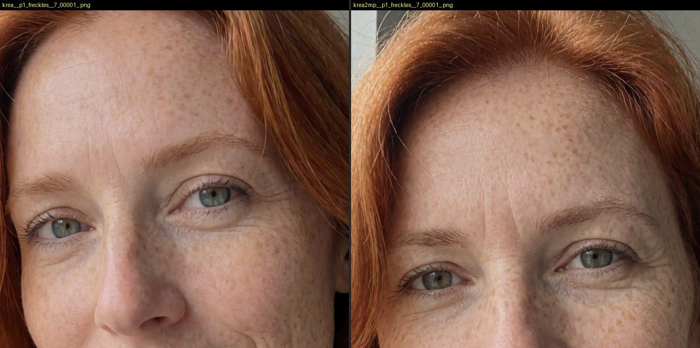
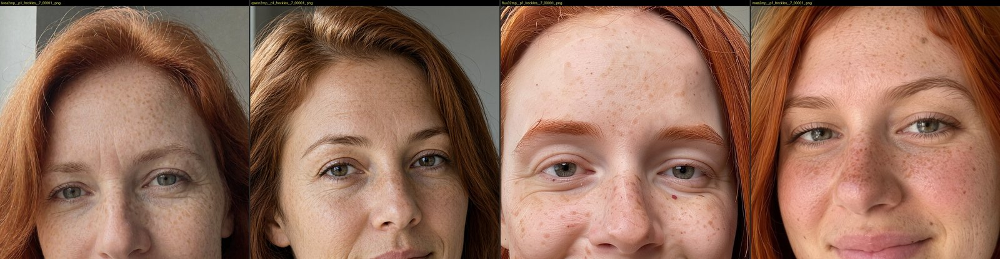
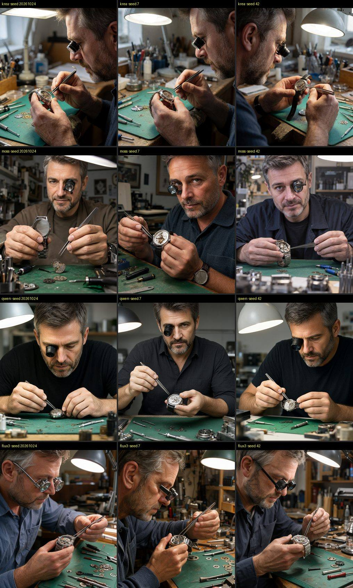
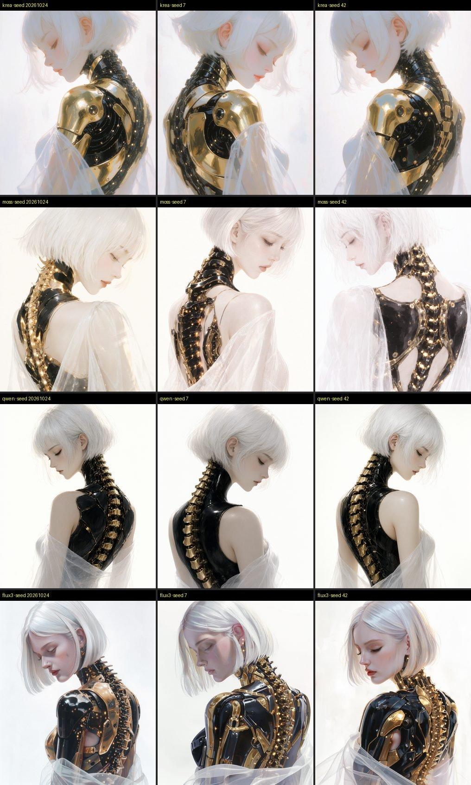
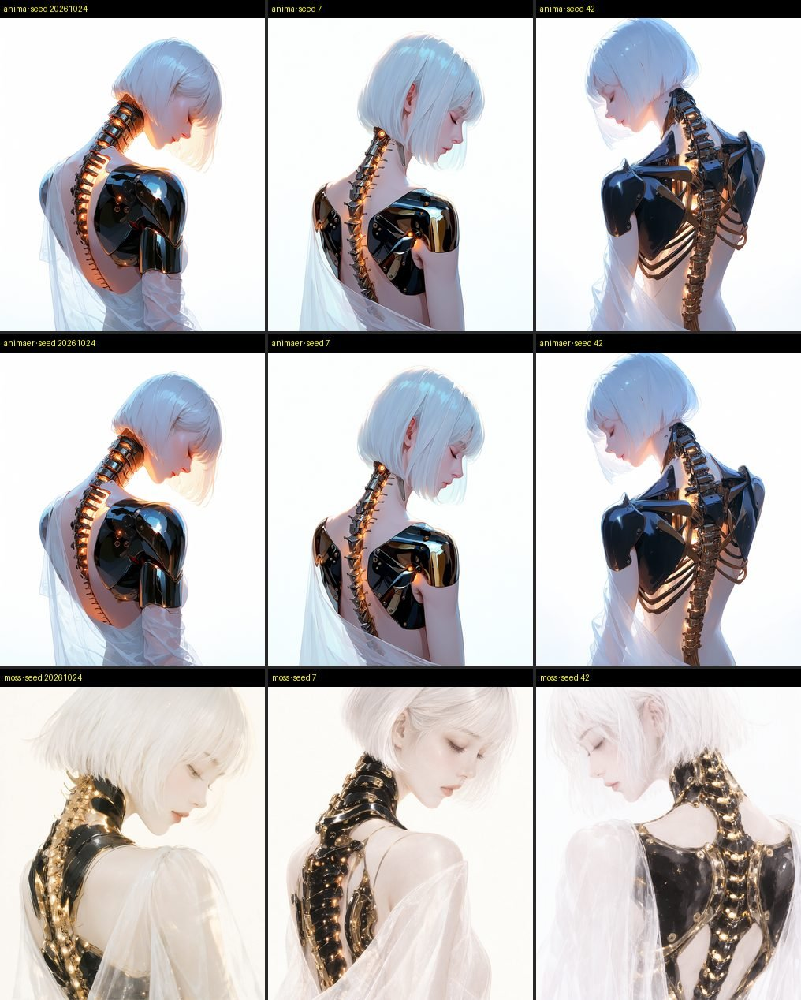
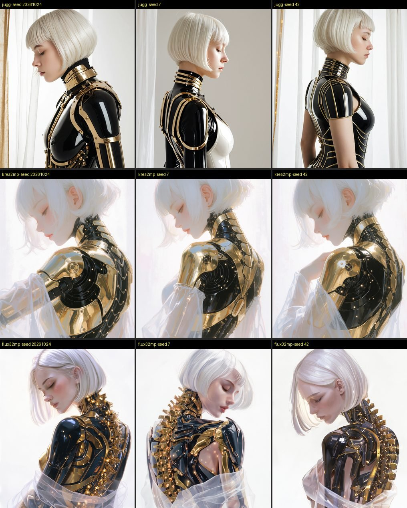
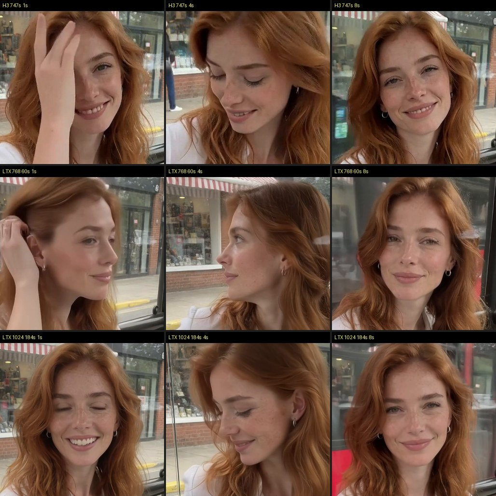
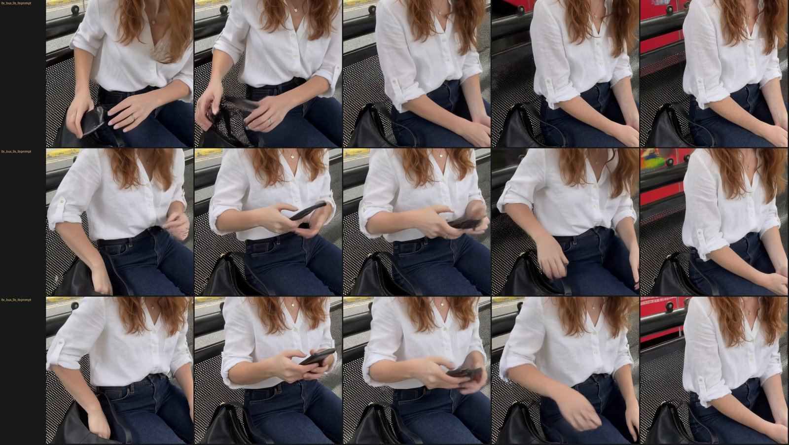

Не победитель, а карта: какая модель для какой задачи. Реализм, рисованное, физика взаимодействия, скорость и видео.
Цель — не найти одного «победителя», а понять, какая модель для какой задачи. Девять одинаковых промптов (шесть реалистичных и три рисованных: девушка-киборг по мотивам работы Sleeps_In_Sunbeams, живописная девушка с драконом, аниме), по три сида каждый, на 1 МП и на 2 МП. Около пятисот картинок. Каждую модель запускали по её официальному шаблону ComfyUI, без LLM-улучшайзера промпта, чтобы сравнивать модели, а не переписчики.
Автоматическая оценка — скрипт score.py: резкость, резкость лица, «живость» кожи (высокие частоты на лице), оценка возраста против заявленного, эстетика LAION, соответствие промпту (CLIP). Проверка на твоих шести оценках: эстетика LAION повторила твой порядок один в один, а резкость и соответствие промпту с вкусом не связаны. «Физику» (руки, инструмент, предмет) не видит ни одна метрика, поэтому её смотрим глазами.
| Модель | Скорость | Сильные стороны | Слабые стороны | Для чего |
|---|---|---|---|---|
| Krea 2 Turbo | 6 с · 14 с на 2 МП | точнее всех выполняет детали промпта; лучшая «физика» — руки реально работают; возраст как заявлен; повторяет стиль киборга даже без LoRA автора | все сиды почти одинаковые; LoRA реализма молодят лицо на 5–7 лет | реализм по умолчанию, первые кадры для видео, сцены с руками |
| FLUX.3 Klein | 3 с · 7 с | самое «настоящее фото с телефона»: широкоугольное селфи с рукой, прищур, живая кожа, людные улицы | лица старше заявленного; лупу превращает в очки; ночные сцены слишком светлые | документальный реализм, правка по 10 референсам |
| Qwen-Image 2.1 | 3 с · 6 с | самая быстрая; руки и инструменты правильно; на 2 МП появляются поры | «стоковый» вид, симметричные кадры; теряет мелкие детали (родинку) | быстрые черновики, текст и макеты, редактирование |
| Z-Image Turbo | 4 с · 9 с | естественный реализм, хорошее селфи; лицензия Apache; общие LoRA с Krea | три сида дают почти одну картинку; хочет промпты на 100–180 слов | чистая лицензия, повторяемость |
| MOSS-Image | 32 с | твой фаворит для рисованного: воздушный свет, нежные лица, каждый сид — своя композиция; статичный реализм тоже хорош | слабая физика — люди позируют в камеру, инструмент ничего не касается; 2 МП ничего не даёт | иллюстрация, beauty-портрет, текст и макеты |
| Anima | 14 с | самый «нарисованный» результат: киборг как аниме-иллюстрация, чистое аниме | реализм рисует в аниме-стиле (так задумано) | аниме, 2.5D, иллюстрация |
| SDXL Juggernaut | 10 с | глянцевая студийная красота; тебе понравился: «ИИ-шный, но красивый» | читает только 77 токенов — длинный промпт теряет детали | глянцевый beauty-стиль, короткие промпты-теги |
| Kromoss | 12–20 с | честное действие, никто не позирует | кадр без логики и пропорций, блёклая кожа (твоя оценка) | пока не берём |
Из статьи на Civitai: Krea 2 обучена до 2048×2048, а мы рисовали на 1 МП. На 2 МП у Krea, Qwen и FLUX.3 появляются поры, отдельные веснушки и волоски. У MOSS выигрыша нет, только вдвое дольше. Workflow 01b теперь по умолчанию 1280×1600; 896×1120 остаётся быстрым черновиком.


Твоё замечание про MOSS подтвердилось на всех сидах: часовщик позирует в камеру, пинцет висит в воздухе. Krea, Qwen и FLUX.3 работают руками по-настоящему.




LTX-2.5 сделал 9 секунд за минуту, а на 1024×1280 — за 3 минуты с резкостью на уровне H3 (H3: 12,5 минуты). Он живее: камера и волосы двигаются смелее. Но на быстрых поворотах головы теряет лицо, а сценарий выполняет менее точно. H3 остаётся для финала. Рабочая схема: перебрать идеи на LTX, лучшую довести на H3 с тем же первым кадром. Новый workflow — 03L_video_ltx25_i2v.

По документации LTX нужен сплошной абзац, но при таком промпте телефон так и не появился. Работает по-другому: строки по таймингу, одно действие на 2–3 секунды; в каждой строке — какая рука и где предмет; указать количество предметов («ровно один телефон; в начале он в сумке; ничего не появляется и не исчезает без руки»). И оставить строки-«замки» внешности и фона: так LTX лучше держит лицо.
